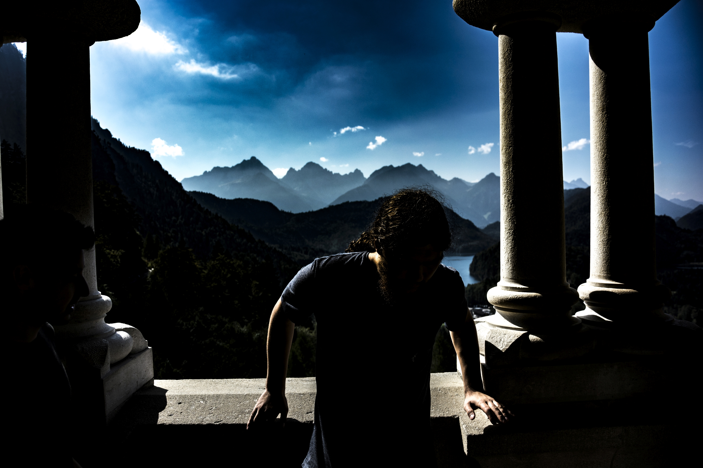

Welcome!

Greetings!
My name is Fuad Soudah. I am a 21 years old aspiring designer, currently studying at University of Sydney and on exchange at Ludwig-Maximilians Universität in Munich.
My areas of expertise encompass a wide range of design topics, to name a few: Photography, Graphic, Video, User Experience and Web Developement. Furthermore, I have a fair knowledge of Database Systems, a few programming languages, Physical Computing, Environmental Development. One hobby is persistently pursued throughout the years was running a detailed, extensive blog.
History
I was born in Sydney, Australia. After having lived there for 6 years I left for Warsaw, Poland. After having spent 12 years I moved back to Sydney and after having lived there for 2 years, I left for a mobility period in Munich, Germany. My life might seem complicated as it is, but that's just the tip of an iceberg. To continue, my Mother is of Polish and my father of Palestinian origins. One, specialized in fine arts, another in engineering topics. On my own, I decided to pursue somewhat a middle ground and throughout the years, with fair success, I managed to acquire a broad selection of knowledges which on top was complemented with writing skills and a digital touch left upon.

Website
Reaching this point was not that easy.
I eventually managed to scrap off most of the materials that I ever built, raised, created and cultivated. With the use of my own memory, I was able to put together the crucial parts and write a compelling, yet close to truthful - a backstory. I believe that each valuable item ever created has, or at the very least deserves a matching story, that will come close to what it actually delivers.
While the quality of works is of utmost importance, the process follows or even matches, but it is the circumstances in which the projects were raised that breathes a new life. Showcases the inspirations, longings, design choices, thinking methods and processes, motivations. I did my best to foreclose all the aforementioned and more in utmost the angles.


Navigation
The following website contains a number of elements.
First of all, a common style was introduced on each subpage. My suggestion would be to take a peek at the Education subsection first, which upon investigating (clicking the unit of study), will take you to according subpages with the relevant projects that I have been working on in the past. Most of the materials will be interactive, that is, dependent on external materials such as: youtube and onedrive videos (the second seldom works), onedrive presentations and images, flickr images etc. I did my best to reference everyone that was involved in the group projects that I was involved in. If by any chance I happened to miss anyone, please notify me as soon as possible.
Each subpage will contain a backstory, the majority of which will be kept in professional manner. However, extra material will be included, that may shed some light onto the more creative ways that were applied into the creation process of a variety of projects.
Please take a look at my future (including current) projects on the navigation bar included below. A subpage with a list of changes ought to be attached as well. In case if you were trying to reach me, please find the Contact subpage in the top right corner. The cultural subpage will give you a sneakpeak into the cultural background that I was raised in.
I do hope that your stay on my website will be a pleasant one.
Project:
Who Am I?
Who Am I?
Unit:
Visual Communication
Visual Communication
Tools:
Adobe Photoshop CC
Adobe Photoshop CC
Release:
March 2015
March 2015